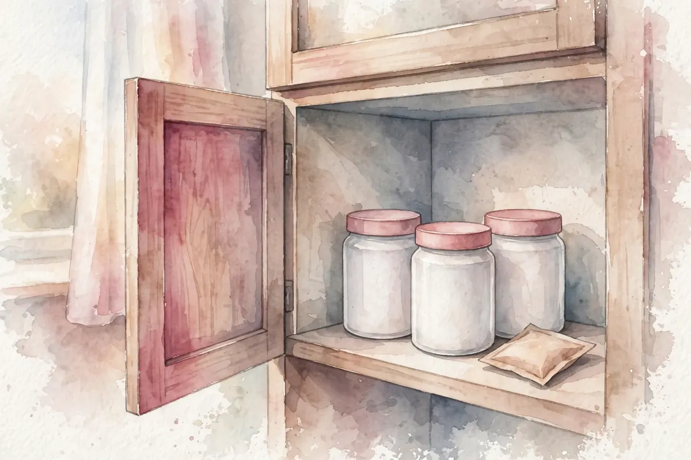

トップ ＞ インナーケア・サプリ ＞ 賞味期限と保管の基本
賞味期限と保管の基本

サプリメントは食品ですから、賞味期限と保管方法が大切です。まとめ買いをしたときほど、管理が行き届かなくなりがちです。この記事では、期限の表示の読み方と、保管の基本を整理します。
賞味期限は「未開封」が前提
パッケージの賞味期限は、未開封で、表示された保存方法を守った場合の期限です。開封したあとは、空気や湿気に触れる機会が増えるため、期限内であっても早めに使い切るのが基本です。また、よく似た言葉に「消費期限」がありますが、サプリメントを含む多くの加工食品では賞味期限が使われます。賞味期限は「おいしく食べられる期限」の目安であり、過ぎたら直ちに食べられない、という性質のものではありませんが、計画的に使い切るための目安として管理するのが賢明です。
期限の確認を習慣にするには、買ったときにパッケージの期限の日付を、目立つ場所にメモしておく方法があります。複数の買い置きがある場合は、期限の早いものから使う「先入れ先出し」が基本です。
保管場所は、温度と湿気で選ぶ
保管の基本は、「直射日光を避け、高温多湿でない場所」です。キッチンのコンロの近く、浴室、車の中などは、温度や湿気の条件が厳しくなりやすい場所です。食器棚や引き出しの中など、温度変化の少ない場所が向いています。
粒同士がくっついている、色やにおいに明らかな変化がある、といった場合は、使用をやめる判断をしてください。食品は見た目とにおいの変化が、状態を知る手がかりになります。
小分けするときの注意
持ち運び用に小さなケースへ小分けする場合は、移した日と元の商品名、賞味期限が分かるようにしておくことが大切です。元のパッケージの写真をスマートフォンに残しておく方法も実用的です。また、小分けは短期間の分だけにして、長期の保管は元のパッケージのままにするのが管理しやすい方法です。
乾燥剤が入っている商品は、開封後もパッケージの中に入れたままにしておきます。こうした小さな管理の積み重ねが、食品を無駄なく使い切ることにつながります。
保管場所が決まったら、月に一度、買い置きの棚卸しをする習慣もおすすめです。賞味期限の確認、残量の確認、開封済みのもののチェック。この小さな棚卸しで、期限切れの買い置きはかなり減ります。私は月の初めに、食品棚と一緒にサプリメントの置き場所も眺めることにしています。管理は、特別な道具ではなく、決まったタイミングの確認で成り立ちます。
置き場所を決めたら、家族にも場所を共有しておきましょう。誰が見ても分かる状態にしておくことが、家庭での管理を続けるコツです。
セラフィナ「保管は、置き場所を決めるだけでもずいぶん違うよ。期限の早いものから使っていこう」